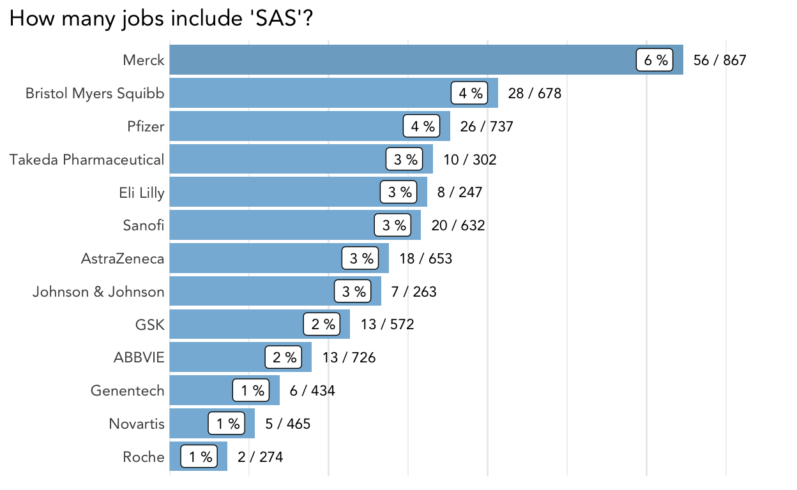

Who is hiring data scientists? I mined some job descriptions to look for trends.
Continuing with the theme of my last few posts about pharma data, I was interested in exploring trends in job descriptions across different big pharma companies.
This rainy-day project might interest other data folks in the pharma industry. Pharma companies are hiring for many roles that need R/Python skills. I am interested in how these teams can be successful across the pharma ecosystem and translate the investment in data science into meaningful gains that can lead to better medicines.
I was primarily interested in the following:
I collected data from a popular job posting site using web scraping techniques. I used python and bash scripts to do that part. I will focus here on some exploratory analysis and observations.
I used the same list of the largest pharma companies as my previous post on data science tweets (and added Genentech because their posts are separate from Roche).
First, load some packages.
library(dplyr) # data wrangling
library(gt) # make nice tables
library(ggplot2) # nice plots
library(tidytext) # used for tokenizing bigrams
library(tidylo) # used to compare word usage between posts
# plot theme
theme_set(theme_minimal(base_family = "Avenir"))
color_values <-
setNames(colorspace::desaturate(
c("deepskyblue1",
"deepskyblue2",
"deepskyblue3",
"deepskyblue4"), amount = 0.5),
as.factor(1:4))
# set seed
set.seed(1786)
The data contains information on the company, title, and the full text of the description. The data is limited to jobs located in the United States.
jobs <- read.csv("~/Documents/code/pharma_job_analysis/data/2022-09-28/combined_data.csv")
glimpse(jobs)
Rows: 8,210
Columns: 4
$ title <chr> "Associate Scientist I", "Lab Technician", "QC S…
$ company <chr> "ABBVIE", "ABBVIE", "ABBVIE", "ABBVIE", "ABBVIE"…
$ link <chr> "https://www.indeed.com/rc/clk?jk=e5833a40be5101…
$ description <chr> "Completely follow established experimental prot…The number of job postings varied by company, and I de-duplicated to remove posts that had identical titles and descriptions. These could be multiple openings for the same role or duplicate postings. After some experimentation, I decided to remove the duplicates. This decision had a larger impact on some companies than others. For example, GSK had about 40% duplicates in the original dataset, and I might be underestimating open roles there.
jobs <- distinct(jobs, company, title, description, .keep_all = TRUE) %>%
add_count(company, name = "n_company") %>%
filter(n_company > 30)
count(jobs, company, sort = T) %>%
gt(caption = "The number of job postings by company") %>%
tab_options(data_row.padding = px(1))
| company | n |
|---|---|
| Merck | 867 |
| Pfizer | 737 |
| ABBVIE | 726 |
| Bristol Myers Squibb | 678 |
| AstraZeneca | 653 |
| Sanofi | 632 |
| GSK | 572 |
| Novartis | 465 |
| Genentech | 434 |
| Takeda Pharmaceutical | 302 |
| Roche | 274 |
| Johnson & Johnson | 263 |
| Eli Lilly | 247 |
To find data-intensive jobs, I quantified the number of postings by company that contained specific keywords in the description. Most job descriptions have a section that lists the various skills/experience desired for the job. Searching for “R,” “Python,” or “SAS” could help me identify the types of jobs I am interested in, independent of the title or the level of the job. The description lengths varied widely by company. Abbvie postings were the shortest, with a median of 446 words, while GSK postings were the longest, with a median of 1272 words.
I wrote a helper function to summarize the number of jobs with each keyword and adjusted the input regex to get the best results. I presented the results in a {ggplot2} annotated bar chart. However, this information can be summarized nicely in a table with packages like {reactable}.
I also wrote a function (not shown) to return the text in the description surrounding the keyword so that I could do some quality control and ensure that I was only getting the desired results. For example, if I wanted all jobs that contain “AI,” I need to be careful because I am not interested in jobs related to “AIDS” or “PAI.”
#' Summarize job postings by keyword
#'
#' @param data jobs data.frame with description, company
#' @param pattern a regex to search for within description
#'
#' @return a tibble with number of jobs negative, positive,
#' and percent positive for the keyword by company
description_search <- function(data, pattern) {
count(data, company, search = grepl(pattern, description)) %>%
tidyr::pivot_wider(names_from = search,
values_from = n, values_fill = 0) %>%
rename("pos" = `TRUE`, "neg" = `FALSE`) %>%
mutate(percent = pos / (pos + neg)) %>%
arrange(desc(percent))
}
plot_description_search <- function(data,
pattern,
title = NULL) {
gplot <- description_search(data, pattern) %>%
mutate(company = forcats::fct_reorder(company, percent)) %>%
mutate(color = cut(x = percent, breaks = c(0, 0.05, 0.1, 0.25, 1),
include.lowest = T),
color = as.factor(as.numeric(color))) %>%
mutate(n_label = glue::glue("{ pos } / { neg + pos }"),
p_label = paste(round(100 * percent), "%")) %>%
ggplot(aes(y = percent, x = company)) +
geom_col(aes(fill = color), show.legend = FALSE) +
geom_label(aes(label = p_label,
y = percent - (max(percent) * 0.02)),
size = 3, family = "Avenir", hjust = 1) +
geom_text(aes(label = n_label, y = percent + (max(percent) * 0.02)),
size = 3, family = "Avenir", hjust = 0) +
scale_fill_manual(values = color_values) +
scale_y_continuous(labels = scales::percent,
expand = expansion(mult = c(0, .18))) +
coord_flip() +
labs(x = NULL, y = NULL,
title = title) +
theme(plot.title.position = "plot",
panel.grid.major.y = element_blank(),
axis.text.x = element_blank(),
axis.text.y = element_text(hjust = 1, margin = margin(r = 0)))
gplot
}
Let’s look at results for some common programming languages.
plot_description_search(jobs, "[Pp]ython",
title = "How many jobs include 'Python'?")
plot_description_search(jobs, "[^(Maurice)] R[\\., ][^(&N.Ph)]",
title = "How many jobs include 'R'?")
plot_description_search(jobs, "SAS", title = "How many jobs include 'SAS'?")

It looks like Merck was doing a lot of hiring for data-intensive roles when I collected this data.
I was also interested in the titles for the jobs that required R/Python/SAS/etc.
Job titles are not standardized, so counting each exact title’s occurrence was not informative. To illustrate, here is the count of unique job titles that mention ‘R’ in the description.
r_jobs <- jobs %>%
filter(grepl("[^(Maurice)] R[\\., ][^(&N.Ph)]", description))
n_distinct(r_jobs$title)
[1] 250Therefore, I decided to tokenize the titles and consider bigrams (a pair of consecutive words) using the {tidytext} package.
data_jobs_titles <- jobs %>%
mutate(r = grepl("[^(Maurice)] R[\\., ][^(&N.Ph)]", description)) %>%
mutate(title = stringr::str_remove_all(title, "and")) %>%
unnest_tokens(word, title, token = "ngrams", n = 2)
Below is a table with bigrams more likely to appear in jobs with “R” in the description. The results are similar for Python and SAS (many jobs listed all these skills). I used the {tidylo} package to calculate these statistics.
data_jobs_titles %>%
count(r, word) %>%
bind_log_odds(r, word, n, uninformative = FALSE) %>%
arrange(desc(log_odds_weighted)) %>%
slice(1:15) %>%
select(word, n, log_odds_weighted) %>%
gt() %>%
tab_options(data_row.padding = px(1))
| word | n | log_odds_weighted |
|---|---|---|
| associate director | 51 | 24.624656 |
| senior scientist | 24 | 18.718214 |
| principal scientist | 27 | 18.574961 |
| associate scientist | 3 | 13.341991 |
| data scientist | 30 | 11.839345 |
| pharmacology pharmacometrics | 28 | 11.739631 |
| senior manager | 5 | 11.102193 |
| co op | 5 | 10.567063 |
| r d | 6 | 10.504087 |
| quantitative pharmacology | 22 | 10.398723 |
| associate principal | 10 | 10.030570 |
| cell therapy | 4 | 9.976590 |
| director clinical | 11 | 9.590808 |
| senior principal | 13 | 9.488367 |
| postdoctoral fellow | 6 | 9.296038 |
Many jobs that require R are for more senior roles like “associate director” or “principal scientist.” Terms related to the department or function, like “pharmacology pharmacometrics” and “r d,” also rank highly. This result is consistent with these jobs requiring advanced degrees and training.
Initially, I was surprised that the percentage of data-related job postings was so high, considering all the types of roles at a big pharma company (Johnson & Johnson has over 140,000 employees)!
That said, this is consistent with my hypothesis that data-intensive jobs are in demand and that companies are working hard to hire more data professionals and retain them.
This was a side project, and I did not invest time finding multiple data sources or testing different methodologies. A major shortcoming is that I don’t have longitudinal data. I grabbed data on a single day and cannot look at trends over time, which would be interesting. Maybe I will do a follow-up analysis in the future with updated data. Given that my data was a snapshot from September 2022, I am skeptical of drawing too many conclusions about comparing individual companies.
pander::pander(sessionInfo())
R version 4.0.5 (2021-03-31)
Platform: x86_64-apple-darwin17.0 (64-bit)
locale: en_US.UTF-8||en_US.UTF-8||en_US.UTF-8||C||en_US.UTF-8||en_US.UTF-8
attached base packages: stats, graphics, grDevices, utils, datasets, methods and base
other attached packages: tidylo(v.0.2.0), tidytext(v.0.3.1), ggplot2(v.3.3.6), gt(v.0.7.0) and dplyr(v.1.0.9)
loaded via a namespace (and not attached): tidyselect(v.1.1.2), xfun(v.0.31), bslib(v.0.2.5.1), pander(v.0.6.3), purrr(v.0.3.4), lattice(v.0.20-41), colorspace(v.2.0-3), vctrs(v.0.4.1), generics(v.0.1.3), htmltools(v.0.5.3), SnowballC(v.0.7.0), yaml(v.2.3.5), utf8(v.1.2.2), rlang(v.1.0.4), jquerylib(v.0.1.4), pillar(v.1.8.0), glue(v.1.6.2), withr(v.2.5.0), DBI(v.1.1.1), lifecycle(v.1.0.1), stringr(v.1.4.0), munsell(v.0.5.0), gtable(v.0.3.0), memoise(v.2.0.0), evaluate(v.0.15), labeling(v.0.4.2), knitr(v.1.39), forcats(v.0.5.1), fastmap(v.1.1.0), fansi(v.1.0.3), highr(v.0.9), tokenizers(v.0.2.1), Rcpp(v.1.0.9), scales(v.1.2.0), cachem(v.1.0.5), jsonlite(v.1.8.0), farver(v.2.1.1), distill(v.1.3), digest(v.0.6.29), stringi(v.1.7.8), grid(v.4.0.5), cli(v.3.3.0), tools(v.4.0.5), magrittr(v.2.0.3), sass(v.0.4.1), tibble(v.3.1.8), janeaustenr(v.0.1.5), crayon(v.1.5.1), tidyr(v.1.2.0), pkgconfig(v.2.0.3), downlit(v.0.4.0), ellipsis(v.0.3.2), Matrix(v.1.3-2), assertthat(v.0.2.1), rmarkdown(v.2.11), rstudioapi(v.0.13), R6(v.2.5.1) and compiler(v.4.0.5)
If you see mistakes or want to suggest changes, please create an issue on the source repository.
For attribution, please cite this work as
Walsh (2022, Oct. 7). Alice Walsh: Data Jobs in Pharma. Retrieved from https://awalsh17.github.io/posts/2022-10-07-pharma-data-jobs/
BibTeX citation
@misc{walsh2022data,
author = {Walsh, Alice},
title = {Alice Walsh: Data Jobs in Pharma},
url = {https://awalsh17.github.io/posts/2022-10-07-pharma-data-jobs/},
year = {2022}
}